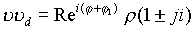
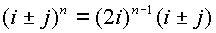
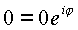
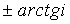

|
В. И. ЕЛИСЕЕВ ВВЕДЕНИЕ В МЕТОДЫ ТЕОРИИ
ФУНКЦИЙ ПРОСТРАНСТВЕННОГО КОМПЛЕКСНОГО ПЕРЕМЕННОГО |
|
1.1.7. Операция деления в комплексном пространстве
Наличие в пространстве
(n ) изолированного направления, как было показано, обусловливает появление в пространстве новых объектов - делителей нуля. Остановимся на свойствах этих объектов.Делители нуля обладают свойством нуля, для которого в действительной и комплексной областях справедливо равенство
| , | (1.12.) |
где
a и b могут быть и пространственными числами n . Равенство (1.12.) сократить на нуль нельзя, Для делителей нуля есть аналогичное равенство, которое будет дано ниже, поэтому на них сокращать нельзя так же, как сокращать (1.12.) на нуль. Сокращение есть операция деления, поэтому делить на элементы делителей нуля нельзя так же, как делить на нуль. Следует отличать логический термин “делить нельзя” или “разделить невозможно”. Термин “делить нельзя” это условие алгебраического запрета на операцию. Термин “разделить невозможно” это тупик алгебраического построения, который возникает вследствие неправильного логического построения алгебраических операций.Покажем наличие в пространстве (n ) свойства делителей нуля, аналогичного свойству (1.1
2.) для нуля. Рассмотрим произведение числа (n ) на делители нуля n д:(1.13.) |
Выражение (1.1
3.) получено на основе коммутативного умножения элементов. По смыслу выражение (1.13.) эквивалентно выражению (1.12.). Делить на элементы n д=i± j нельзя так же, как и делить на пуль. Однако, как и нуль, делители нуля имеют обратные элементыВторое свойство нуля
для делителей нуля не выполняется

Таким образом, в пространстве (n ) есть объекты, которые обладают как свойством нуля (1.11.), так и свойством обычных элементов
. Обратным элементом для нуля является бесконечностьдля делителей нуля обратными элементами являются бесконечные делители
Необходимо отметить, что ноль в пространстве представим в виде
где f
, S, s могут быть любыми числами и даже изолированным направлением.Определим операцию деления как решение системы линейных уравнений, получаемых в пространстве комплексных чисел.
Обозначим:
| (1.14.) |
Элемент
y считаем неизвестным, его надо получить из решения системыy=n ’
Раскрывая соотношение (
1.14.), получим систему четырех линейных уравнений с четырьмя неизвестными: |
(1.15.) |
Система (
1.15.) получена на основе отделения действительных и мнимых частей в комплексном произведении vy и комплексе v':Система имеет решение, когда ее определитель не равен нулю. Определитель системы (
1.15.) оказался равным модулю комплекса возведенному в четвертую степень. Опуская элементарные выкладки, запишем как фактСледовательно, система (
1.14.) не имеет решения, когда выражение (1.15.) равно нулю. Для комплексного пространства (n ) определитель (1.15.) равен нулю в двух случаях:что возможно при a=0, b=0, c=0, d=0;
когда n I n д и комплекс является делителем нуля.
Во втором случае, даже если n ’I n д, делить нельзя, так как вступает в силу соотношение (1.13.).
Таким образом, исследования решения системы линейных уравнений с четырьмя неизвестными, построенной на базе алгебры с коммутативным умножением,
показали, что операция деления выполнима в комплексном пространстве, как в обычном действительном и плоском комплексном пространстве.Пространственная комплексная алгебра
(n ) относится к алгебре с делением, к алгебре кольца класса вычетов [6] так же, как комплексная алгебра (z) если считать нуль за идеал. В пространстве (n ) вычет нуля эквивалентен вычету всех элементов делителей нуля n д. Это следует из выражения (1.13.).Итак, доказано, что в пространстве (n ) за вычетом нуля и элементов делителей нуля возможно проведение операций, аналогичных операциям над действительными и комплексными (
z) числами.Алгебра обладает свойством нормированной алгебры: норма произведения равна произведению норм
Теорема Фробениуса
[5], которая запрещает обобщение поля действительных чисел, в своем доказательстве не учитывает свойств новых объектов - чисел делителей нуля, поэтому она не применима к построенной алгебре. Теорема Фробениуса утверждает, что расширением поля действительных и комплексных чисел является квартенионы - всякое обобщение чисел приводит к изоморфизму квартенионов.Квартенионные единицы 1,
i, j, k связаны следующими равенствами:Свойство квартенионных единиц не соответствуют коммутативности умножения.
В настоящее время уже очевидно, что это свойство и явилось тем ограничением, которое не позволило обобщить методы теории функций комплексного переменного (
z) в комплексное пространство.Предлагаемая комплексная алгебра n снимает это ограничение.
Алгебра делителей нуля не требует введения ограничений на проведение операций с этими объектами, также как и введение новых. Необходимо иметь только ввиду , что делители нуля обладают как свойствами обычных чисел , так и свойством нуля. Например произведем умножение
Но известно соотношение
, поэтому| , | (1.16.) |
сложение изолированного аргумента с любам неизолированным дает изолированный, поэтому произведение элемента пространства на делитель нуля дает делитель нуля.

Возведение в степень делителей нуля дает следующую таблицу значений
, перенесено из действительного анализа,


………
|  | (1.17.) |
Рассмотрим соотношение
. Сократить это равенство на делитель нуля нельзя, так как в этом случае делить нуля становится равным обычному числу, возводя которое в степень не дает исходное равенство.. Равенство выполняется только при произведении делителей нуля..
Если имеем в двух частях равенства делители нуля , возведенные в степень выше единицы, то сократить на делитель нуля в степени , чтобы в результате в одной из частей равенства осталась степень не меньше единицы возможно .Например , имеем
.
Извлечение корня из делителей нуля дает делитель нуля
.В конечном счете ноль также является делителем нуля. В пространстве Y при такой интерпретации нуля область нуля как делителя нуля расширяется и является неотъемлемой частью пространства, как ноль на плоскости и прямой. Если обычные числа имеют своим продолжением в плоскости и пространстве числа, которые подчиняются обычным алгебраическим операциям, то ноль как делитель имеет расширение как пространство делителей нуля .
Ноль на плоскости есть
, ноль в пространстве есть , где может быть и.
Общий вид делителей нуля
| , | (1.18.) |
где
.Это выражение показывает, что любая точка в пространстве Y окружена сферой из делителей нуля.
Мини оглавление:
[0], [1.1.1, 1.1.2, 1.1.3, 1.1.4, 1.1.5, 1.1.6, 1.1.7, 1.1.8, 1.2, 1.2.1, 1.2.2, 1.2.2.a, 1.2.2.b, 1.2.2.c, 1.2.2.d, 1.2.2.e, 1.2.2.f, 1.2.2.g, 1.2.2.h, 1.2.3, 1.3.1, 1.3.2, 1.3.3, 1.3.4, 1.3.5, 1.3.6, 1.4.1, 1.4.2, 1.5, 1.6, 1.7.1, 1.7.2, 1.7.3.1, 1.7.3.2, 1.7.3.3, 1.7.4.1, 1.7.4.2, 1.8.1], [2.1, 2.2],[3.1, 3.2, 3.3, 3.4.1, 3.4.2, 3.4.3, 3.4.4, 3.4.5],[4.1, 4.2, 4.3, 4.4],[5.1, 5.1.Рис.52, 5.2, 5.3, 5.4, 5.4.Т1, 5.4.Т2, 5.4.Т3, 5.5.1, 5.5.2, 5.5.3, 5.5.4],[6.1.1, 6.1.2, 6.2.1, 6.2.2, 6.2.3, 6.2.4, 6.2.5, 6.3, 6.4.1, 6.4.2, 6.5.1, 6.5.2],[7.1, 7.2, 7.3, 7.4, 7.5, 7.6, 7.7.1, 7.7.2, 7.8.1, 7.8.2, 7.8.3, 7.9],[8.1, 8.2.1, 8.2.2, 8.3, 8.4, 8.5, 8.6, 8.6.T1, 8.7, 8.8.1, 8.8.2, 8.8.3, 8.9.1, 8.9.2, 8.9.3, 8.10, 8.10.T2, 8.10.T3],[9.1, 9.2, 9.3, Рис.88, 89, 90, 91, 92, 93, 94, 95, 96, 97, 98, 99, 100],[10.1, 10.2, 10.3, 10.4, 10.5, 10.6, 10.7, 10.8, 10.9, 10.10, 10.11, 10.12, 10.13, 10.14, 10.15.1, 10.15.2, 10.16.1, 10.16.2, 10.17, 10.18],[11]
Размещенный материал является электронной версией книги: © В.И.Елисеев, "Введение в методы теории функций пространственного комплексного переменного", изданной Центром научно-технического творчества молодежи Алгоритм. - М.:, НИАТ. - 1990. Шифр Д7-90/83308. в каталоге Государственной публичной научно-технической библиотеки. Сайт действует с 10 августа 1998.
E-mail: mathsru@gmail.com